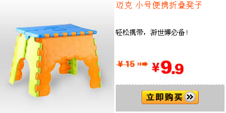

Get Him to the Greek¶
2010-11-23 22:28:56 看完《Get Him to the Greek》，喜欢那个啥的英国腔，喜欢那个圆圆的毛毛墙，毛毛墙，毛毛墙，毛毛墙。。。。。。 一开始以为是记录片，接着以为是喜剧，中间以为是情感片，最后才明白是一场英美混搭风格的摇滚。
听听琴，看看电影¶
2010-11-19 20:50:43 刚刚看完 wild target 。突然发现还有这么一个 Bill Nighy 。原来英国不光出产憨豆，还出产老豆。虽然情节不咋的，可是看看美女，看看冷面老豆，在这个暖暖的冬夜，听着楼下的练琴声，倒也提醒我生活在一个人间。
我看见了河狸的窝¶
2010-11-15 20:20:45 河狸是一种生活在河边的哺乳动物，也是穴居动物。河狸建窝先是用牙咬断树枝，再把它搬运到水里，咬成一个个的小木棍。然后，河狸把小的木棍、树枝、草、石和块、软泥混在一起建成了一个小岛，这就是河狸的窝。2010年有人在加拿大艾伯塔省发现了一个长度为约为850米的河狸坝，这个目前世界上最长的东东可能从1975年就开始建造了。 河狸为什么要筑窝？ 为了抵御天敌。 河狸为什么要筑这么大的窝？ 因为没有天敌可以限制它。 今天我在南方看见了河狸的大窝。
读书笔记20101113¶
2010-11-13 22:26:56 商纣王以前的家在朝歌城的中央。有一天他觉得城里的人太多了，贵族的车把道路都占满了，城里的空气也没有以前清新了，所以他决定搬家。新的宫殿建好了， 梅伯进谏说：“您的新家太豪华了而且房间也太多了。”商纣王说：“我的宫殿不是给我一个人住的，是为朝歌城的所有子民建的。我爱我的子民，我为他们每个人都建了一个房间。”朝歌城中的百姓奔走相告，莫不为商纣王的关心而鸡冻万分。大家私下组织了一个庆祝仪式，准备在商纣王搬家的大好日子献给大王。商纣王搬家那天，全城戒严，梅伯死。
据说10以上的地方更适合人类居住¶
dormouse 2010年09月24日 08:41 分类：个人日记
来源： http://www.nasa.gov/topics/earth/features/health-sapping.html

电子书比较中...¶
2010年09月17日 15:57 分类：个人日记
想买一本电子书，比较中...

还有一些备选的型号:台电K3，纽曼6206。
智器K7-3G也是一个不错的选择，参见下面：
http://player.youku.com/player.php/partnerid/XOTcy/sid/XMTk1MjUxODI0/v.swf
新蛋最贴心的商品¶
2010年07月10日 21:56 分类：个人日记
《战略特勤组》观后感¶
2010年06月07日 21:02 分类：个人日记
－－特以此文纪念忘却的高考
刚刚看完电影《战略特勤组》，英文名为《 Unthinkable 》，不知道为什么会这么翻译。我看不如翻译为《毒树之果》算了，因为通篇都是在讲一个刑讯逼供的故事。里面我认识的人还是蛮多的，有黑色男人、白色女人和很多种看上去很傻的美国大兵。整部电影就是一个黑客帝国和24小时生的私生子。最后拆弹的大兵打开的电子表格中居然都是“ghghgh”，是不是打字的人肚子饿了？There is no happy ending.
家里来了一个“机器人”¶
2010年02月27日 18:32 分类：个人日记 家里来了一个扫地机器人（iRobot Roomba® 550）。 试用了半天总结一下：
优点：
- 没电后会自动充电。
- 可以定时开始工作。定时可以精确分钟。
- 扫床底，沙发底下方便。
缺点：
- 声音比较响。
- 扫地效率比较低。
- 靠碰撞来感知障碍物，而不是无线感知方式。
要是我家有只猫，会对这个东西有什么反应？
如果只有一碗粥...¶
2009年11月08日 19:53 分类：个人日记
看到一则冷笑话：
情人节那天，我辗转找到一个我中学暗恋的女生的电话，给她发了一条短信：如果只有一碗粥，你先喝半碗，剩下的半碗，我放在怀里给你保温……
几分钟后，她回了一条短信：
你是谁介绍的？
一次四百，包夜七百。
其实我觉得一点也没有可笑的地方，只是感觉到有一点冷。